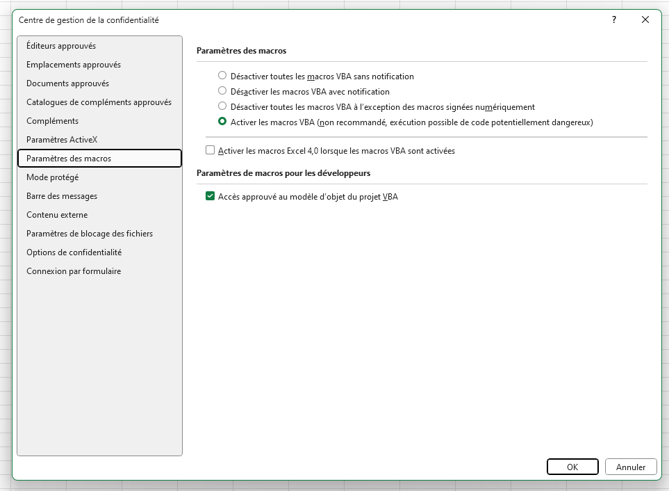

%%|fig.width: 2 flowchart TD A[setup] --> B[designer] G[Geobase] -->B B --> C[Linelist v.1] C --> F(Nouvelle version) C --> E(Export: MSF, MoH, Données brutes.) E --> I(Import dans la nouvelle version) E --> H(Partage, ..) F --> K[Linelist v.2] I --> K
Démonstration de l’utilisation de outbreak-tools
Introduction
Outbreak-tools est un ensemble d’outils pour faciliter la création de linelist sous Excel. Ces outils permettent entre autre d’automatiser sous excel:
- L’ajout de variables (que ce soient des listes déroulantes, des valeurs entières, décimales, ou même des formules excels) ainsi que leur formatage.
- La traduction d’une linelist d’une langue à une autre,
- L’ajout d’analyses dans la linelist sous forme de tableaux (univariées, bivariées, temporelles, spatiales),
- L’ajout de graphes dans la linelist,
- Les imports/exports vers des formats spécifiques de toute la linelist ou de certaines variables.
- La gestion des données géographiques dans la linelist.
- L’évolution de la linelist au fur et à mesure que l’on ajoute ou supprime des options/variables.
La conception de la linelist est pensée dans un fichier de configuration appelé setup. Ce fichier setup est ensuite chargé dans un autre fichier qui conçoit la linelist appelé designer. Le designer crée la linelist, en se basant sur les configurations du setup. La procédure de création de la linelist se fait donc en 3 étapes:
1- Définir ses besoins dans le fichier setup: La configuration du fichier s’inspire de celle des formulaires XLS de Kobo. Cela ne nécessite pas a priori une connaissance approfondie de excel. Un fichier setup est défini par maladie, et peut permettre de créer des linelist dans plusieurs langues.
2- Télécharger les données géographiques de la zone cible: Il existe une application disponible en ligne pour télécharger les données géographiques de la région qui vous intéresse. Elle est mise à jour au fur et à mesure que de nouvelles informations géographiques sont disponibles.
3- Générer la linelist en précisant les options dans le designer.
Exercices
La présente série de 3 exercices permet d’explorer les possibilités citées précédemment en mettant en jeu un setup pour la rougeole. Vous disposez dans les dossiers de tous les materiels pour effectuer les exercices.
Téléchargez et dézippez les matériels
Vous pouvez télécharger les exercices sous format zip pour une utilisation offline ici. Il faut extraire le fichier zip après le téléchargement.
Assurez-vous de débloquer les fichiers téléchargés
Sur certaines machines Windows, vous devrez débloquer vos fichiers pour pouvoir utiliser les macros. Dans certains cas, des fichiers de macro Excel téléchargés depuis le Web sont automatiquement bloqués pour des raisons de sécurité. Vous pouvez débloquer les fichiers par:
0- Clic droit sur le fichier
1- Sélectionnez Propriétés
2- Cochez la case Débloquer en bas à droite.
Activez les macros avant les exercices
Si vous comptez lancer le designer afin qu’il construise une linelist, vous aurez besoin d’autoriser les macros VBA sous excel, ainsi que l’accès au modèle objet VBA:
1- Affichez l’onglet Développeur sous excel.
2- Dans l’onglet Développeur, cliquez sur Sécurité des macros. Cochez les options comme présenté dans l’image suivante:

Exercice 1 : Exploration.
Ouvrez le fichier
linelist_measles_en_ex1.xlsbqui se trouve dans le dossierlinelist. Le mot de passe du fichier est 5678.Parcourez les feuilles de la linelist.
Remplissez des données géographiques en utilisant le geo-Helper. Sélectionnez les données que vous voudrez.
Explorez les analyses univariées, bivariées et temporelles. Recalculez les mêmes analyses en filtrant sur les personnes agées de moins de 2 ans.
Exportez les données filtrées avec l’export anonyme pour MSF. Ouvrez et examinez les exports. Si vous n’avez pas changé le mot de passe, le mot de passe des exports devrait être 605637.
Exercice 2 : Modifications du fichier setup
Ouvrez le setup
setup_measles_base_ex2.xlsbqui se trouve dans le dossiersetup. On décide d’ajouter les variables suivantes:- A la section Admission de la feuille Linelist patients, juste avant la sous-section hospitalisation:
muac(MUAC) qui prend trois valeurs: “Green (125+mm)”, “Yellow (115-124mm)”, “Red (< 115mm)”
- A la section Vaccination de la feuille Linelist patients, juste après Vaccinated against measles:
vacci_measles_doses(Nombre de doses reçues) qui est une variable numériques.- Ajoutez à cette variable une validation pour s’assurer qu’elle est comprise entre 0 et 4
- A la section Admission de la feuille Linelist patients, juste avant la sous-section hospitalisation:
Traduisez les labels ajoutés en Français
Faites un Checking sur le setup pour vous assurer qu’il ne contient pas d’erreurs.
Note
Vous devriez normalement obtenir un fichier de configuration identique à setup_measles_exercise_two.xlsb qui se trouve dans le dossier setup. Vous pouvez partir aussi de ce fichier si vous voulez.
Regenérez une nouvelle linelist appelée
linelist_measles_en_ex2en utilisant le designer. Enregistrez-la dans le dossier de la démo en s’assurant que vous avez sélectionné l’anglais comme langue. Vous utiliserez le fichiergeobase-cod-2023-03-13_20230612.xlsxqui se trouve dans le dossiergeobasecomme géobase.Importez les données
import_linelist_en.xlsx(qui se trouve dans le dossierdata) dans la linelist. Regardez les données qui n’ont pas été importées et parcourez les données de la linelist.
Exercice 3: Analyses
On décide d’ajouter dans le fichier des analyses sur les outcome.
Ouvrez le setup
setup_measles_base_ex3.xlsbqui se trouve dans le dossiersetup.Dans la feuille analyses, ajoutez une table univariée portant sur le nombre de patients par type de sortie. Ajoutez les pourcentages et un graphique pour cette table.
Dans la feuille analyses, ajoutez une table temporelle portant sur l’évolution des type de sortie par date de notification. Ajoutez une l’option pourcentage en ligne, et ajoutez le total.
Dans la feuille analyses, ajoutez un graph sur les types de sorties. Dans les spécifications du graphique, représentez le nombre de décédés par date de notification, en barre.
Traduisez tous les labels en Français
Faites un checking sur le setup pour s’assurer qu’il ne contient pas d’erreurs.
Note
Vous devriez normalement obtenir un fichier de configuration identique à setup_measles_exercise_three.xlsb qui se trouve dans le dossier setup. Vous pouvez partir aussi de ce fichier si vous voulez.
Regenérez une nouvelle linelist appelée
linelist_measles_en_ex3en utilisant le designer. Enregistrez-la dans le dossier de la démo e en s’assurant que vous avez sélectionné l’anglais comme langue.Importez les données
import_linelist_en.xlsxqui se trouvent dans le dossierdatadans la linelist. Parcourez les données de la linelist.Imprimez la feuille
Linelist patients.